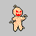

Home
>
Characters
Pasta Lad

About
Pasta Lads are kidnapped children that have been turned into monsters by the
Pasta Sorcerer
. They guard the Pasta Sorerer's lair in the sewers deep beneath
Rhine City
and do thier master's bidding.